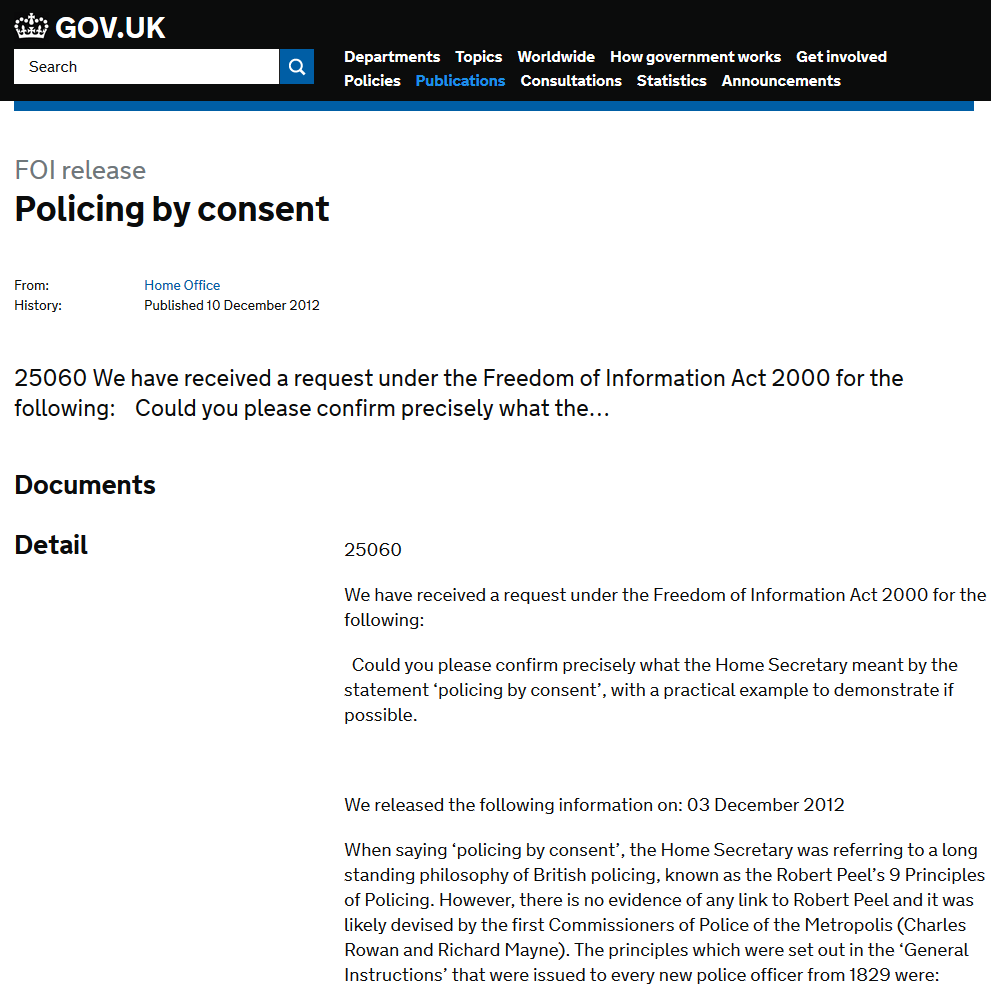

Policing By Consent
Perma🔗 (via Kottke.org)

I've had this tab open since the events in Ferguson. I feel like I need to repost them here, just to make sure they're seen and kept. Originally created as the basic rules or principles upon which the Metropolitan Police should act and behave:
- To prevent crime and disorder, as an alternative to their repression by military force and severity of legal punishment.
- To recognise always that the power of the police to fulfil their functions and duties is dependent on public approval of their existence, actions and behaviour, and on their ability to secure and maintain public respect.
- To recognise always that to secure and maintain the respect and approval of the public means also the securing of the willing co-operation of the public in the task of securing observance of laws.
- To recognise always that the extent to which the co-operation of the public can be secured diminishes proportionately the necessity of the use of physical force and compulsion for achieving police objectives.
- To seek and preserve public favour, not by pandering to public opinion, but by constantly demonstrating absolutely impartial service to law, in complete independence of policy, and without regard to the justice or injustice of the substance of individual laws, by ready offering of individual service and friendship to all members of the public without regard to their wealth or social standing, by ready exercise of courtesy and friendly good humour, and by ready offering of individual sacrifice in protecting and preserving life.
- To use physical force only when the exercise of persuasion, advice and warning is found to be insufficient to obtain public co-operation to an extent necessary to secure observance of law or to restore order, and to use only the minimum degree of physical force which is necessary on any particular occasion for achieving a police objective.
- To maintain at all times a relationship with the public that gives reality to the historic tradition that the police are the public and that the public are the police, the police being only members of the public who are paid to give full-time attention to duties which are incumbent on every citizen in the interests of community welfare and existence.
- To recognise always the need for strict adherence to police-executive functions, and to refrain from even seeming to usurp the powers of the judiciary of avenging individuals or the State, and of authoritatively judging guilt and punishing the guilty.
- To recognise always that the test of police efficiency is the absence of crime and disorder, and not the visible evidence of police action in dealing with them.
- Prior: Hit the Reset Button in Your Brain
- Next: QLMarkdown